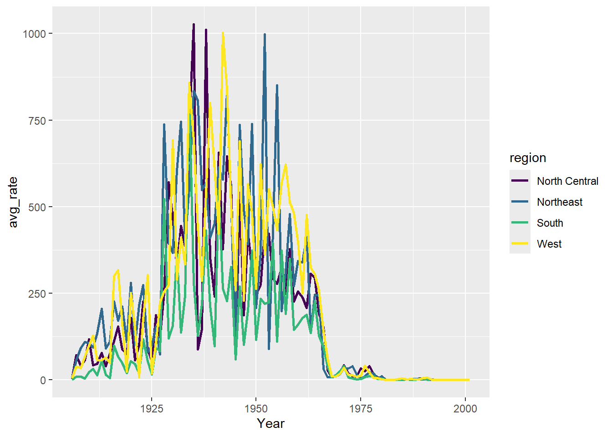
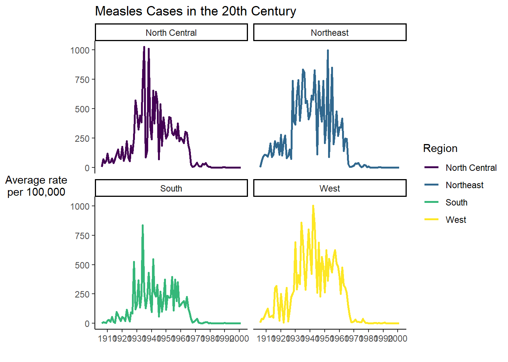

Rows: 4055 Columns: 7
── Column specification ────────────────────────────────────────────────────────
Delimiter: ","
chr (3): State, division, region
dbl (4): Year, TotalCount, pop1000, epi_rate
ℹ Use `spec()` to retrieve the full column specification for this data.
ℹ Specify the column types or set `show_col_types = FALSE` to quiet this message.
Rows: 4 Columns: 2
── Column specification ────────────────────────────────────────────────────────
Delimiter: ","
chr (1): region
dbl (1): avg_rate
ℹ Use `spec()` to retrieve the full column specification for this data.
ℹ Specify the column types or set `show_col_types = FALSE` to quiet this message.
Why Data Visualization?
Visualization is an important process which can help us explore, understand, analyze, and communicate about data. Visualizations, including many kinds of graphs, charts, maps, animations, and infographics, can be far more effective at quickly communicating important points than raw numbers alone. But visualizations also have the power to mislead. And so throughout this class, we’ll be covering some good data visualization practices. Slides accompanying this section can be found here: https://osf.io/yk5bx^[Slides created by the [Visualizing the Future project] (https://visualizingthefuture.github.io/), made possible in part by the Institute of Museum and Library Services, RE-73-18-0059-18.
Visualizing Data with ggplot2
Next, we will learn about ggplot2 - a tidyverse package for visualizing data. It is a powerful and flexible tool that allows you to create fully customizable, publication quality graphics. The gg in ggplot2 stands for grammar of graphics. The grammar of graphics is the underlying philosophy of the package. It focuses on creating graphics in layers. Start with the data – map the data the axes and to aesthetic qualities like size, shape, and color and geometries like dots, lines, and polygons. Further refine the appearance of your plot by adjusting scales and legends, labels, coordinate systems, and adding annotations.
All ggplot2 graphs start with the same basic template:
All graphs start with the ggplot function and the data. We’ll use the pipe to pipe the data to the function.
region_summary %>%ggplot()
We see that even this initializes the plot area of RStudio.
Next, we define a mapping (using the aesthetic, or aes(), function), by selecting the variables to be plotted and specifying how to present them in the graph, e.g. as x/y positions or characteristics such as size, shape, color, etc. Here we will say that the x axis should contain the affiliation variable. Note how the x-axis populates with some numbers and tick marks.
Next we need to add ‘geoms’ – graphical representations of the data in the plot (points, lines, bars). ggplot2 offers many different geoms for common graph types. To add a geom to the plot use the + operator.
If you want the y axis to display something other than count, you need to make a couple of small adjustments. First - specify the y variable in the aes() function, and change the stat argument from it’s default of “count” to “identity” This tells it to base the y axis on the specified variable.
Setting vs mapping aesthetics
When working with ggplot2, it’s important to understand the difference between setting aesthetic properties and mapping them. All geoms have certain visual attributes that can be modified. Polygons like bars, have the properties fill and color. You can change the inside color of a bar with fill, and the border with color. We can modify the defaults with the fill and color arguments in the geom_bar() layer. (I’ve also increased the linewidth to make it easier to see the border color)
How did we know the color names “blue” and “purple” would work in the code above? R has 657 (!!) built in color names. You can see them by calling the function colors(). You can also specify colors using rgb and hexadecimal codes.
Now we have manually set a value for the fill and color. To create our initial graph, we used the mapping argument and the aes() function to map the x axis to the BENE_RACE_CD variable. Watch what happens if we map the fill property to the BENE_RACE_CD variable as well.
As we’ll see later in this lesson, mapping a variable to an aesthetic will be especially helpful when we have a third variable to display.
Note
When you map an aesthetic with aes() in the ggplot() function it is inherited by all subsequent layers. When you map in a geom_*() function it is applied only to that layer.
Now let’s start using ggplot2 to help us answer our research question - how did the introduction of the vaccine affect measles rates in the country? We’ll do this with a line graph, which is useful for showing change over time.
First, we need to use our **dplyr** skills to summarize the data.
The + in the ggplot2 package is particularly useful because it allows you to modify existing ggplot objects. This means you can easily set up plot templates and conveniently explore different types of plots, so the above plot can also be generated with code like this:
year_total_line <- year_total_line + geom_point()
There are many ways to customize your plot, like changing the color or line type, adding labels and annotations. One thing that would make our graph easier to read is tick marks at each decade on the x-axis. There are a number of functions in ggplot2 for altering the scale. We want to alter the x-axis scale, which holds continuous data, so we can use the scale_x_continuous() function. Note that when you start to write the name of the function, RStudio will supply you with other similarly named functions.
scale_x_continuous() has an argument called breaks which allows you to alter where the axis tick marks occur. We can use that together with seq() to say put a tick mark every 10 places between 1900 and 2000.
Now we can move beyond basic exploration and start to use our graph to analyze and tell stories about our data. One important trend we might notice, is the sharp decrease in cases in the 1960s. The measles vaccine was introduced in 1963. We can use our visualization to tell the story of the vaccine’s impact.
Let’s drop a reference line at 1963 to clearly indicate on the graph when the vaccine was introduced. To do this we add a geom_vline() and the annotate() function. There are multiple ways of adding lines and text to a plot, but these will serve us well for this case. Note that you can change features of lines such as color, type, and size. We can supply coordinates to annotate() to position the annotation where we want.
Finally, let’s add a title and axis labels to our plot with the labs() function. Note that axis labels will automatically be supplied from the column names, but you can use this function to override those defaults.
year_total_line <- yearly_rates_joined %>%group_by(Year) %>%summarize(TotalCount =sum(TotalCount)) %>%ggplot(aes(x=Year, y=TotalCount)) +geom_line() +geom_point() +scale_x_continuous(breaks =seq(from=1900, to=2000, by=10)) +geom_vline(xintercept =1963, color ="red", linetype="dashed") +annotate(geom ="label", x=1963, y=800000, label="1963: vaccine introduced") +labs(title ="Measles Cases Decrease After Vaccine Introduced", x ="Year", y ="Total Measles Case Count")year_total_line
Now, we have a pretty nice looking graph. Finally, let’s save our plot to a png file, so we can share it or put it in reports. To do this we use the function called ggsave().
Let’s try applying a viridis palette. viridis was designed to be especially robust for many forms of color-blindness. It is also meant to print well in grey scale. As an additional advantage, a lightweight form of the package is included with ggplot2, so there is no need to install additional packages.
To do this, we need to change our function scale_fill_discrete() to scale_viridis_d()
yearly_rates_joined %>%group_by(Year, region) %>%summarize(TotalCount =sum(TotalCount)) %>%ggplot(aes(x=Year, y=TotalCount, group=region, color=region)) +geom_line(linewidth=1) +scale_x_continuous(breaks =seq(from=1900, to=2000, by=10)) +geom_vline(xintercept =1963, color ="red", linetype="dashed") +annotate(geom ="label", x=1963, y=400000, label="1963: vaccine introduced") +labs(title ="Measles Cases Decrease After Vaccine Introduced", x ="Year", y ="Total Measles Case Count") +scale_color_viridis_d()
`summarise()` has grouped output by 'Year'. You can override using the
`.groups` argument.
The theme of a ggplot2 graph controls the overall look and all non-data elements of the plot. There are several built-in themes which can be applied as another layer. Start typing theme_ in RStudio to see a list of themes. You can also use the theme() function to modify aspects of an existing theme. Here we apply theme_classic() which removes the grid lines and grey background of the default theme.
yearly_rates_joined %>%group_by(Year, region) %>%summarize(avg_rate =mean(epi_rate)) %>%ggplot(aes(x=Year, y=avg_rate, group=region, color=region)) +geom_line(linewidth=1) +scale_x_continuous(breaks =seq(from=1900, to=2000, by=10)) +geom_vline(xintercept =1963, color ="red", linetype="dashed") +annotate(geom ="label", x=1963, y=8000, label="1963: vaccine introduced") +labs(title ="Measles Cases Decrease After Vaccine Introduced", x ="Year", y ="Total Measles Case Count") +scale_color_viridis_d() +theme_classic()
`summarise()` has grouped output by 'Year'. You can override using the
`.groups` argument.

Faceting and Small Multiples
It can be difficult to understand a graph with too much data. Even just five lines
yearly_rates_joined %>%group_by(Year, region) %>%summarize(avg_rate =mean(epi_rate)) %>%ggplot(aes(x=Year, y=avg_rate, group=region, color=region)) +geom_line(linewidth=1) +scale_x_continuous(breaks =seq(from=1900, to=2000, by=10)) +geom_vline(xintercept =1963, color ="red", linetype="dashed") +annotate(geom ="label", x=1963, y=8000, label="1963: vaccine introduced") +labs(title ="Measles Cases Decrease After Vaccine Introduced", x ="Year", y ="Total Measles Case Count") +scale_color_viridis_d() +facet_wrap(~region, nrow=2) +theme_classic()
`summarise()` has grouped output by 'Year'. You can override using the
`.groups` argument.
Then we can create two geom_line layers and highlight just the one in the facet.
tmp <- regional_rates %>%mutate(State2=State)tmp %>%ggplot(aes(x=Year, y=epi_rate)) +geom_line(data=tmp %>% dplyr::select(-State), aes(group=State2), color="grey", linewidth=0.5, alpha=0.5) +geom_line(aes(color=state), color="#69b3a2", linewidth=1.2 ) +scale_x_continuous(breaks=seq(from=1950, to=1980, by=5)) +theme_minimal() +theme(legend.position="none",plot.title =element_text(size=14),panel.grid =element_blank() ) +ggtitle("A comparison of measles cases in the South Atlantic Region") +facet_wrap(~State, ncol =2)

Maps
While we were successful at creating a bar chart to compare measles rates in each state, it is often more helpful to use a map to visualize geographic data. There are multiple types of map-based visualizations in R and tools for creating them. While it is possible to make interactive and animated maps in R, in this lesson, we will only cover static maps.
In this lesson, we will focus on creating choropleths. Despite the funny name, this is a visualization you have likely seen many many times. A choropleth is a map that links geographic areas or boundaries to some numeric variable.
ggplot2 needs a little help to make map visualizations. Depending on the geographies you want to map, you may need to find geoJSON or shapefiles. There are also several packages in R that come pre-loaded with background maps of common geographies. We’ll be using one in this lesson called usmap. There are several advantages to this package:
It contains maps of the US with both state and county boundaries.
You can create maps based on census regions and divisions. 3. Alaska and Hawaii are included, while many map packages only have a map of the continental US.
It creates the map as a ggplot2 object, so you can customize the visualization with ggplot2 functions (i.e. the things you’ve been learning in this lesson!)
We’ve installed usmap in your RStudio Cloud project, so now let’s load it into our session.
library(usmap)
Warning: package 'usmap' was built under R version 4.3.3
The main function in this package is plot_usmap. When you call it without any arguments, you get the background map of the US.
plot_usmap()
By default it shows state boundaries, but we could also ask it to show county boundaries
plot_usmap(regions="counties")
Since we do not have that level of data in our dataset, we’ll use the default option. There are two required arguments to plot_usmap().
The first is a data frame specified with the data argument. This data frame must have a column called state or fips which contains state names or FIPS (Federal Information Processing) codes. FIPS codes must be used for county level data. This data frame must also have a column of values for each state or FIPS.
The second argument is the name of the column that contains the values, specified by the value argument.
Let’s first create a data frame with just our 1963 data.
Now let’s plot our data with plot_usmap(). Remember it’s important to use rate here rather than our raw count numbers since we are dealing with areas of vastly different populations.
We are provided with a default color scheme, but we can adjust this. Before we do though, it’s worth talking a little about some considerations for using color in visualizations. Color can make a huge difference to the effectiveness of your visualization, and it’s important to think carefully about your choices. For example, in our default color palette, many of the shades are pretty dark, and it is hard to visually distinguish among them. When choosing a palette, you want to be sure shades can be easily distinguished from one another. Also, choose palettes that are color-blind friendly and would hold up well if you visualization was printed in greyscale.
library(viridis)
Warning: package 'viridis' was built under R version 4.3.3
Loading required package: viridisLite
Warning: package 'viridisLite' was built under R version 4.3.3
viridis is integrated with ggplot2, and our map is a ggplot object, we can call the function scale_fill_viridis and add it to our plot.
Note how the brighter areas seem to highlight the areas of greater concern.
If you prefer the darker colors to represent higher rates, and lighter to represent lower, we can switch the direction of the palette with the direction argument.
plot_usmap(data=measles1963df, values ="epi_rate") +scale_fill_viridis(option ="rocket", direction =-1)
Let’s add a title, assign to an object, and save to a png file.
map_1963 <-plot_usmap(data=measles1963df, values ="epi_rate") +scale_fill_viridis(option ="rocket", direction =-1) +labs(title ="Incidence Rate of Measles per 1000 people in 1963")ggsave(filename ="figures/map_1963.png", plot = map_1963, bg ="white")
Next Steps: From BeginnR to PractitionR
I hope you enjoyed this very brief introduction to R. You may be wondering - where do you go from here?
There are tons of R classes and tutorials on the internet, but the best way to learn R is to use it! I recommend picking a data set and just playing around. There’s no harm in making mistakes along the way. It’s much easier to find a useful tutorial if you look for ones that teach a specific task you want to accomplish.